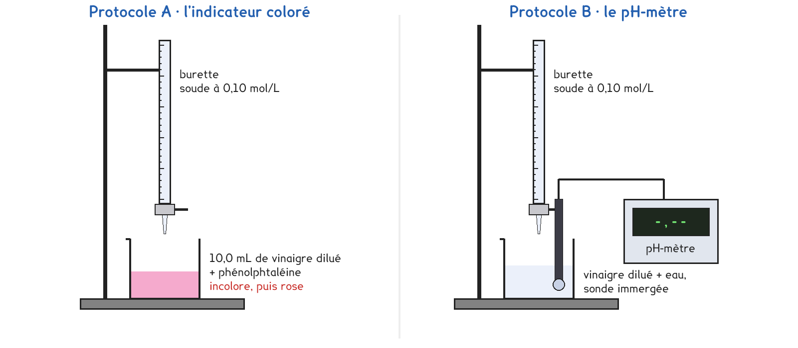
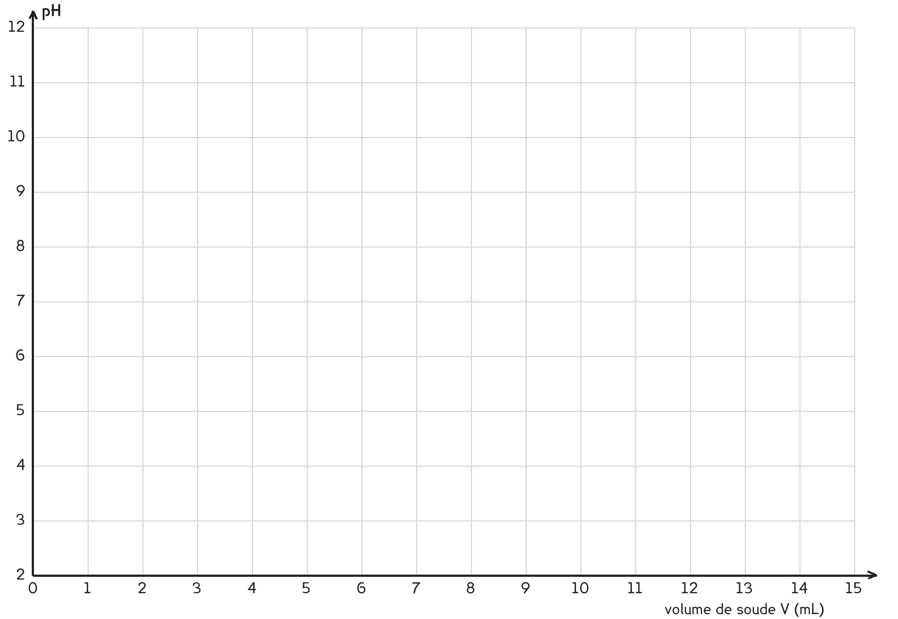

1re Bac Pro · toutes spécialités · TP commun CT-06
Combien d'acide y a-t-il dans un litre de ce vinaigre, et est-il vraiment à 8° ?
2 figures
Sujet. Dans la cuisine, la bouteille de vinaigre blanc annonce « 8° ». Ce degré n’a rien à voir avec l’alcool : il dit combien d’acide éthanoïque le vinaigre contient.
Problématique : combien d’acide y a-t-il dans un litre de ce vinaigre, et est-il vraiment à 8° ?

8° signifie 8 g d’acide pour 100 g de vinaigre. Un litre de vinaigre pèse environ 1 000 g.
a) Calculer la masse d’acide dans un litre de vinaigre à 8°.
m = ………… g d’acide par litre
b) Avec M = 60 g/mol, calculer la concentration C attendue, en mol/L.
n = m ÷ M = ………… ÷ 60 = ………… mol dans un litre, donc C = ………… mol/L
Le professeur a dilué le vinaigre dix fois. On en titre 10,0 mL avec de la soude à 0,10 mol/L versée à la burette. À l’équivalence, l’acide et la soude ont été versés en proportions exactes, et on admet la relation : Ca × Va = Cb × VE.
Protocole A · l’indicateur coloré. La phénolphtaléine est incolore dans l’acide et devient rose juste après l’équivalence : on arrête au premier rose qui persiste.
Protocole B · le pH-mètre. On relève le pH après chaque millilitre de soude : à l’équivalence, le pH fait un saut. Le labo n’a qu’un pH-mètre : un seul poste, dont la courbe est projetée à la classe.
c) Compléter le tableau pour comparer les deux protocoles.
| Protocole A | Protocole B | |
|---|---|---|
| Ce qui signale l’équivalence | …………………… | …………………… |
| Ce qu’on relève | …………………… | …………………… |
| Nombre de postes possibles | tous · un seul | tous · un seul |
On choisit avant de toucher au matériel ; le professeur attribue le poste du pH-mètre.
d) Quel protocole prenez-vous ? Justifier en une phrase.
Je prends le protocole ……… parce que ……………………………………………………………………
e) Si le vinaigre est à 8°, calculer le volume VE attendu, en mL.
Vinaigre dilué : Ca = C ÷ 10 = ………… mol/L
VE = Ca × Va ÷ Cb = ………… mL
Avant de commencer
Lunettes et gants : la soude est corrosive, même diluée, surtout pour les yeux.
La burette se remplit posée plus bas que les yeux, robinet fermé, avec un entonnoir.
La sonde du pH-mètre est fragile : on la rince, on ne la pose jamais sur la paillasse.
Les solutions titrées vont au bidon de récupération.
f) Protocole A : relever les deux volumes à l’équivalence.
VE rapide = ………… mL · VE précis = ………… mL
Protocole B : relever le pH après chaque ajout de soude.
| V (mL) | 0 | 1 | 2 | 3 | 4 | 5 | 6 | 7 | 8 | 9 |
|---|---|---|---|---|---|---|---|---|---|---|
| pH |
Suite des mesures, resserrées près du saut :
| V (mL) | 10 | 11 | 12 | 12,5 | 13 | 13,5 | 14 | 14,5 | 15 |
|---|---|---|---|---|---|---|---|---|---|
| pH |
La courbe se trace avec les mesures du poste B, projetées pour les autres postes.
g) Tracer pH = f(V), puis lire VE là où la courbe monte le plus vite.

VE lu sur la courbe = ………… mL
h) Schématiser le montage de votre titrage, avec le nom de chaque solution.
Le schéma se dessine sur la feuille du TP.
i) Calculer la concentration du vinaigre à partir de votre VE.
Ca = Cb × VE ÷ Va = 0,10 × ………… ÷ 10,0 = ………… mol/L (vinaigre dilué)
C = Ca × 10 = ………… mol/L ; masse d’acide par litre = C × 60 = ………… g
j) Le vinaigre est-il à 8°, à 5 % près ? Justifier avec votre résultat.
k) L’indicateur et la courbe donnent-ils le même VE ? Comparer avec l’autre groupe.
l) Répondre à la problématique en deux phrases.
Ce que ce TP a établi, et qui vaut pour tout titrage :
À RETENIR
Titrer, c’est trouver la quantité d’une espèce en la faisant réagir avec une solution de concentration connue.
À l’équivalence, les réactifs ont été versés en proportions exactes. On la repère par le changement de couleur d’un indicateur, ou par le saut de pH, là où la courbe monte le plus vite. Le volume versé donne alors la concentration.
TP commun de physique-chimie, toutes spécialités. Le travail se fait sur la feuille du TP : cette page en est la version à l'écran, sans les lignes à remplir. Rien n'est enregistré.